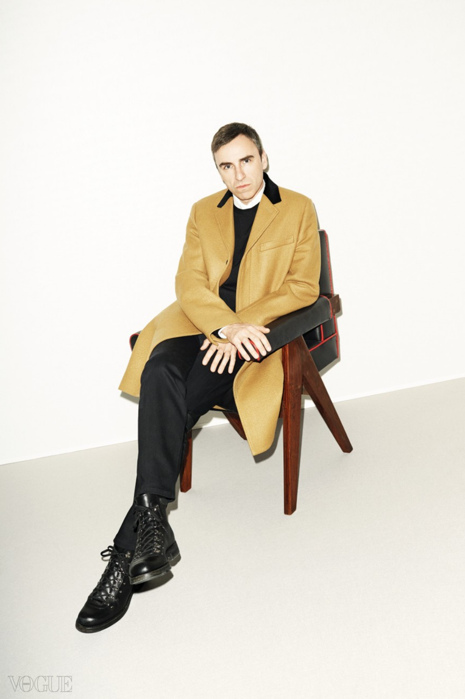
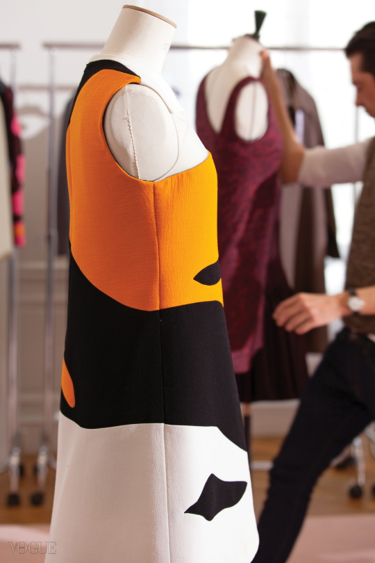
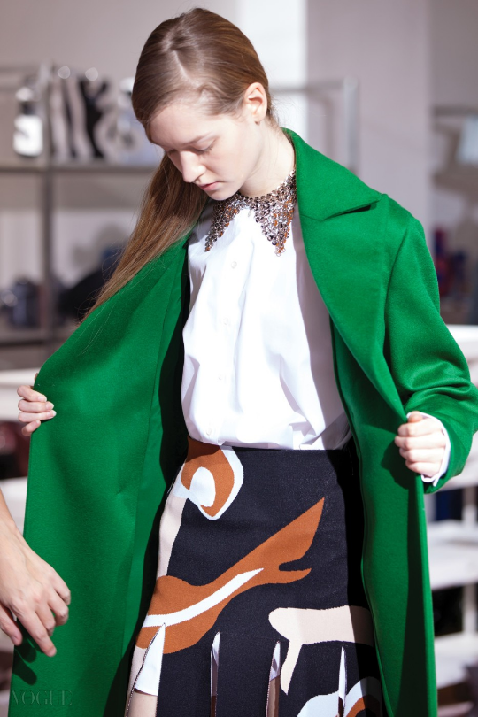
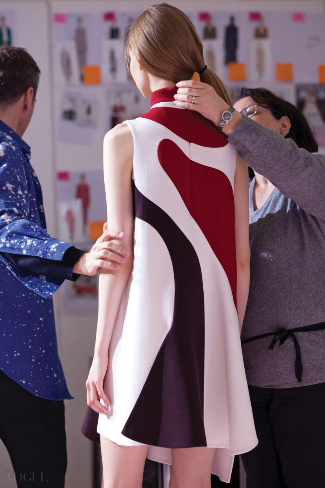
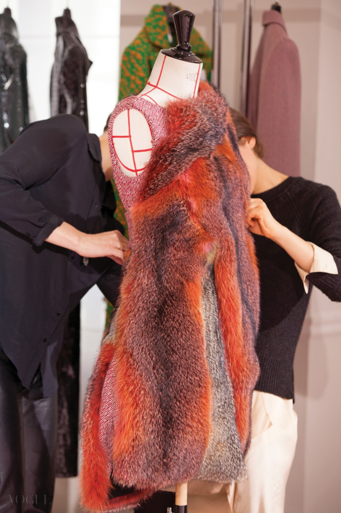
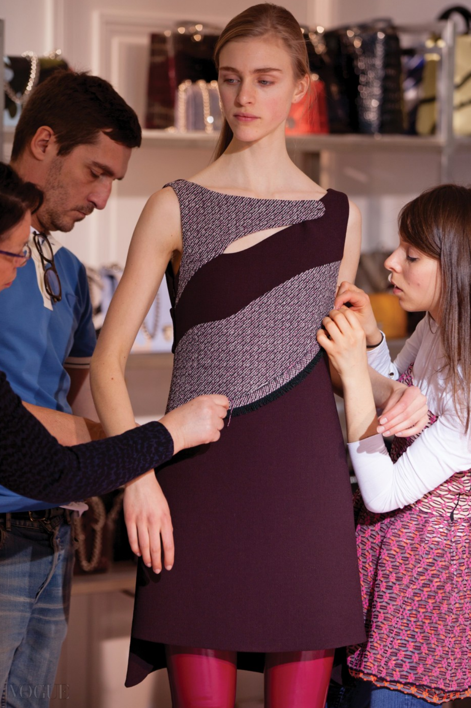
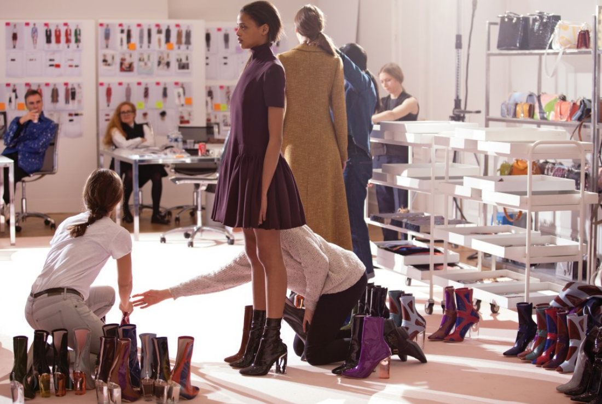
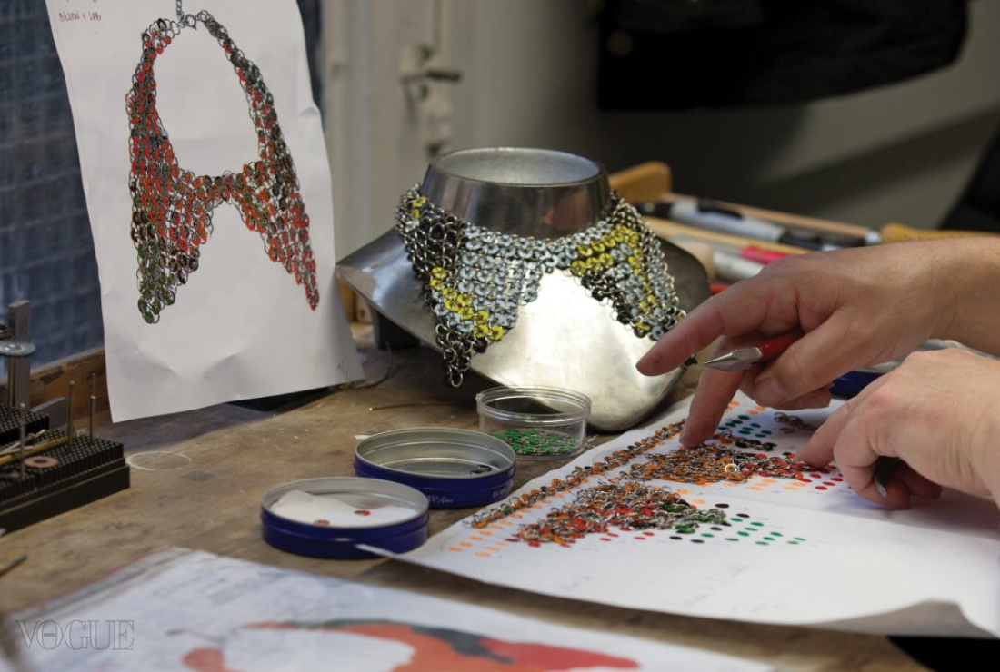

라프 시몬스식 레이디 디올의 탄생을 알린 2015 가을 컬렉션. 다음 날 아침 라프의 15년 지기 친구이자 패션 저널리스트 조앤 퍼니스가 디올 하우스의 하얗고 우아한 살롱에서 라프 시몬스와 마주 앉았다. 인터뷰 속엔 라프의 진짜 모습이 담겨 있다.

“오늘 영화 보러 갈 거야!” 라프 시몬스가 유쾌하게 외쳤다. 어떤 영화를 보게 될지는 크게 신경 쓰지 않는 듯하다. 간다는 사실만으로도 즐거우니까. 조금의 과장도 없이, 디올과 자신의 레이블로 과중한 업무에 시달리는 디자이너에게 이건 흔치 않은 이벤트다. 그는 1년에 8개 대규모 패션쇼를 치르고 심지어 그 수는 계속해서 늘어나고 있다. 지금은 3월 초, 디올 2015 가을 컬렉션 패션쇼를 치른 다음날 아침이다. 우리는 디올 사무실에서 프레스용으로 사용되는 살롱 중한 곳에 함께 앉아 있다. 온통 흰색에 신중한 방식으로 화려하게 장식된 격식 있는 곳이다. 라프 시몬스는 마카롱 냄새를 맡으며 앉아 있다. “설마 너 이거 먹진 않겠지.” 그는 모든 종류를 차례대로 하나씩 집어 들고 냄새를 맡고선 웃음을 터트렸다.
이것이 디자이너의 전형적이고 일상적인 모습이다. 나는 웨이터가 마카롱을 서빙하지 않는 디올 하우스 내 그의 개인 사무실에서 그와 만나는 데 훨씬 익숙하다. 그가 자신의 책상 아래를 뒤져 찾아낸 하리보 젤리를 먹는 모습(그는 파란색의 스머프 젤리를 가장 좋아하는 것 같다), 그리고 눈에 띄는 스털링 루비 작품과 1950년대 모더니스트 가구들을 배경으로 편하게 기대앉아 있는 모습을 떠올리는 쪽이 훨씬 쉽다. 작품들은 전부 그의 개인 컬렉션이다. 시몬스는 순수예술과 가구 디자인에 대한 폭넓은 지식과 예민한 취향을 가지고 있다. 오히려 이 방에서 파격적인 모습을 한 것은 그다. 그는 스털링 루비와 협업한 라프 시몬스 컬렉션의 액체가 튄 형태로 탈색된 밝은 푸른색 셔츠와 검정 진, 역시 그의 컬렉션인 빨간색 라프 시몬스 스탠 스미스 운동화를 신고 있다. 하우스의 격식 있는 영토 내에서 자기 자신의 모습 그대로, 뚜렷이 자기 자신을 드러내며, 마치 집에 있는 것처럼 편안하게 머물 수 있다는 건 지난 3년 동안 그가 디올 하우스에서 어디까지 왔는지를 보여주는 지표다.
동시에 이것은 시몬스의 따뜻함과 정직함에 대한 어떤 힌트를 주는 것이 분명하다. 그는 많은 사람들이 생각하는 것처럼 차갑게 예지하는 타입의 사람이 아니라, 화도 잘 내고 때로는 10대처럼 반항적이기도 하다. 미디어에서 그의 디올 하우스 입성이 화제가 됐을 때 그는 웃으며 이렇게 말했다. “사람들은 계속해서 ‘오, 그는 정말 좋은 사람이야’라고 말하는데, 사실 난 그렇게 좋은 사람이 아니라고!”
나는 15년 동안 라프 시몬스와 알고 지낸 사이다. 그리고 그는 실제로 정말 좋은 사람이다. 그는 때때로 젠체하는 여성복의 세계에 신선한 정직함을 가져왔고, 그가 하는 모든 것에 감성적이고 진심 어린 퀄리티와 현실성을 담아 왔다. 거기에는 가짜가 없고 가식도 없으며, 모든 것이 보이는 그대로다. 가끔 수상식이나 패션쇼 말미에 울기도 하지만, 그리고 그러지 않았다고 강하게 주장하긴 하지만 말이다. 이제 그 증거는 <디올과 나>라는 다큐멘터리에서 누구라도 알아챌 수 있지만, 라프 시몬스는 아직 다른 사람들과 함께 그 영화를 볼 마음의 준비가 되지 않았다. “왜냐하면 지나치게 감상적이 되기 때문이야. 내가 그 영화를 봤을 때 가장 먼저 직면하게 된 건 바로 나 자신의 두려움이었거든.”




2015 가을 컬렉션 막바지 준비로 분주한 아틀리에. 무슈 디올의 레오퍼드 프린트를 동시대적으로 재해석한 얼룩무늬가 주요소로 사용됐다. 이 패턴은 각기 다른 색과 소재를 이어 붙인 것으로, 모피 버전의 민소매 드레스에도 적용됐다.
디올 하우스라는 거대한 무대로의 입성과 함께 그는 쇼비즈의 요란한 활동을 삼갔고, 컬렉션과 쇼가 널리 회자되도록 했다. 디올의 스포트 라이트 아래 놓인다는 것은 디자이너에게 두려운 제안이고 그건 영화에서도 명백하게 보인다. 사실 영화 촬영에 동의했다는 것조차 전혀 그답지 않은 행동인 건 사실이다. “나는 처음부터 매우 부정적이었어.” 그는 설명했다. “그러자 사람들은 내가 감독인 프레데릭 쳉을 만나야 한다고 하더라고. 만나보니 매우 재미있고 친절하고 온화한 사람이기에 ‘오케이’라고 생각했지. 그렇지만 모든 면에서 그 사람의 성격과는 상관없는 일이었어.” 그는 덧붙였다. “물론 지금은 다를 거야, 훨씬 자신감 있어 보이겠지. 영화속의 피터(그의 오른팔인 피터 뮐리에. 2015 가을 컬렉션에서 함께 피날레 인사를 한 남자)를 보면 그는 자신감에 차 있어. 하지만 나를 보면 그 순간에 궁지에서 벗어나지 못하고 있다는 게 보여. 물론, 그 영화를 지금 찍었다면 정말 지겨운 영화가 됐을 거야.”
이제 시몬스는 디올에서 자신의 두 발을 단단하게 디뎠고, 심지어 쇼 바로 다음 날 올라오는 리뷰를 읽더라도 처음에 그랬듯이 속이 뒤틀리거나 하지 않는다. 사실 그건 어떤 디자이너도 진정으로 익숙해질 수 없는 종류의 것이다. “흥미로운 건 그게 진짜 나 자신에 훨씬 가깝다는 거야.” 하지만 시몬스의 본질적인 캐릭터는 사실상 지난 수년간 거의 바뀌지 않았다. 영화 속에서 라프 시몬스는 늘 디올 같은 하우스를 책임질 운명이었다는 사실이 드러난다. 그러나 항상 그랬던 건 아니다. 그가 디자이너가 될지조차 확실치 않은 때도 있었으니까. 그것은 그가 과거에 가졌던 직업을 계속했을 수도 있었다는 가능성과 이어진다. “마르지엘라가 출발점이었어. 난 왜 내가 패션을 시작했는지, 왜 늘 결국엔 1990년에 본 첫 패션쇼(마르지엘라의 세 번째 컬렉션이었던 ‘화이트 컬렉션’)로 돌아오는가에 대해 반복해서 스스로에게 질문했지.” 시몬스가 설명했다. “패션이 무엇이 될 수 있고 왜 내가 패션에 끌리는지를 그때 이해할 수 있었어. 진심으로 이걸 해야겠다고 결심한 순간이었지. 패션계에 발을 들이기에는 이미 멀리 와버려서 닿지 않을 듯 보였지만, 이거야말로 내가 해야 할 일이라고 생각했어. 누구에게도 말하진 않았지만 말이야. 그리고 봐, 지금 이렇게 됐잖아.”
그리고 10년 후, 런던 쇼어디치의 매거진 사무실 지하에서 나는 그를 처음 만났고 인터뷰를 했다. 2000년이었고 서른두 살이었던 라프는 이미 충분히 패션계에 발을 들인 상태였다. 그는 산업디자인이라는 원래의 직업을 던져버렸다. 그러나 1년 동안 자신의 남성복 회사 운영을 중단한 상태였다. 당시 그는 정서적인 혼란에 빠져 있었으며 심지어 몹시 불안해했다. 자신의 레이블을 운영하면서 겪은 혹독함과 압박, 새로우면서 야망에 찬, 세계적인 수준의 대단한 결과물을 내는 젊은 디자이너가 되는 것에 대한 지나친 갈망에 시달렸다. 사실상 그는 남성복의 얼굴을 바꾸고 있었지만, 자신이 그것을 원하는지조차 확신하지 못했다. 물론 지금은 모든 것이 완전히 달라졌지만 말이다.
사실상 라프 시몬스는 남성복의 얼굴을 바꿨다. 그는 패션 전반에서 일어나고 있는 변화를 돕고 있다. 그는 이제 마흔일곱 살이고, 보다 크고 성숙한 관점을 가지고 올해 20주년을 맞은 자신의 회사를 이끌고 있다. 물론, 크리에이티브 디렉터로서 크리스찬 디올이라는 왕국도 책임지고 있다. 이제 그는 자신의 시간을 앤트워프와 파리에서 나눠 사용한다. 그는 무엇이든 훨씬 수월하게 받아들일 뿐 아니라 아주 느긋하다. 비록 코카콜라 회사에서 후원을 받아야 할 정도로 코카콜라 제로를 계속해서 들이켜지만 말이다. 가끔 담배를 포기하기도 한다. 그리고 지금이 그런 상황이다. 그는 강한 플레미시 악센트가 담긴 다양한 언어로 대화를 나눌 수도 있다. 그리고 ‘전설적인 덴마크 개’를 키우고 싶어 한다. 자신이 그레이트 데인 종에 대해 말하고 있다는 걸 절대 알아차리지 못한 채, 그는 약간 불만스러운 목소리로 외칠 것이다. “스쿠비 두처럼 생긴 개란 말이야!”



의상, 신발, 금속 링과 스팽글로 이뤄진 칼라 장식에 이르기까지 제작 과정에는 상당한 수작업이 필요하다. 동물적이고 관능적인 라프 시몬스의 ‘뉴 디올 레이디’는 이렇게 완성됐다.
그가 구사하는 영어도 변화를 겪는 중이다. 그는 조이 디비전의 이언 커티스처럼 보이지 않으면서 ‘질서(Order)’ ‘장애(Disorder)’ ‘배양 (Incubation)’ ‘고립(Isolation)’ ‘지역 간(Interzone)’ 같은 단어들(전부 조이 디비전의 노래 제목)을 사용해서 자신이 겪은 일을 설명하는, 내가 아는 몇 안 되는 사람 중 하나다. 원래 그는 포스트 펑크 팝 레코드에 사용되는 용어들을 일상적으로 사용하곤 했다. 허세를 부리는 게 아니라, 그건 팝 음악과 10대들의 기벽이 넘쳐나는 일상 대화를 통해 주로 영어를 배우는 사람들 사이에 일어나는 기현상에 가까웠다. 사실 그는 늘 영국과 미국 팝 음악과 청년 문화에 매료돼 있었고, 패션 디자이너로서 그의 토대는 전통적인 패션보다 이런 틀 위에서 다져졌다. 그의 최근 컬렉션 또한 예외가 아니다. “컬렉션에서 다른 방식으로 자연과 여성성을 다루고 싶었어. 정원이나 꽃을 떠나서 더 자유롭고 어둡고 섹슈얼한 것.” 시몬스는 말했다. “아이디어는 봄 꾸뛰르 컬렉션에서 시작됐지만 이번엔 보다 거칠고 야만적이고 여자가 자신을 표현하는 방식에 있어서 남성성을 넘어서지.”
쇼를 위해 피팅을 할 때 시몬스는 <잇 팔로우스>라는 최근에 개봉한 저예산 영화의 음악을 반복해서 듣고 있었다. 그리고 ‘디재스터피스(영화 OST를 담당한 일렉트로닉 그룹 이름)’의 이 음악을 가져다가 패션쇼 배경음악으로 사용했다. “무겁고 강한 음악이 흐르는 공포영화야.” 시몬스가 말했다. 영화에는 초자연적인 존재가 나타나고, 성관계 후에 여자 희생자를 괴롭히며 스토킹을 하는 스토리가 이어진다. 순수예술과 거의 동일한 수준으로 영화에 사로잡혀 있는 라프 시몬스의 전형적으로 변태적이고 개인적인 영화 취향이다. 공포영화는 언제나 변치 않는 그의 오락인 동시에 그의 패션쇼에 자주 영향을 줬다. 그리고 동일한 종류의 어둡고 불안하며 영화적인 화학작용이 이번 디올 컬렉션에도 배어 있다.
“나는 감각 과부하의 느낌을 원했어.” 그는 설명했다. “새로운 종류의 카무플라주를 입은 이 동물적이고 섹슈얼한 여성을 통해서.” 여기서 역할이 뒤바뀐다. 스토킹을 하는 것은 초자연적 존재가 아니라 새로운 디올 여성이다. “봄 꾸뛰르 컬렉션 때는 동물적이고 관능적인 여자로 베르슈카를 떠올렸지.” 시몬스가 말했다. “그러나 여성성에 대한 아이디어는 기성복 컬렉션에서 좀더 발전했고, 동물에 대한 아이디어와 그 패턴들을 추상화하는 게 열쇠가 됐어. 그들 중 어떤 것도 일반적이지 않은, 새로운 종의 발명 그 이상이 되도록.”
여러 가지 측면에서 시몬스가 디올에서 일을 시작한 이후 이뤄온 것은 새로운 종의 디올 여성의 발명이며, 그녀는 시즌을 더할수록 보다 진보적인 모습을 갖춘다. 그러나 그녀의 진화는 과거에 뿌리를 두고 있다. 1947년 자신의 첫 컬렉션에서 레오퍼드 프린트를 혁신적으로 사용한 것은 바로 무슈 디올이다. “디올 여성은 성장하고 있고, 내가 하우스에서 일하는 방식을 바꾸는 것 같아.” 디자이너가 말했다. “그렇지만 언제나 디올이야. 디올 하우스가 항상 그녀의 집이니까.